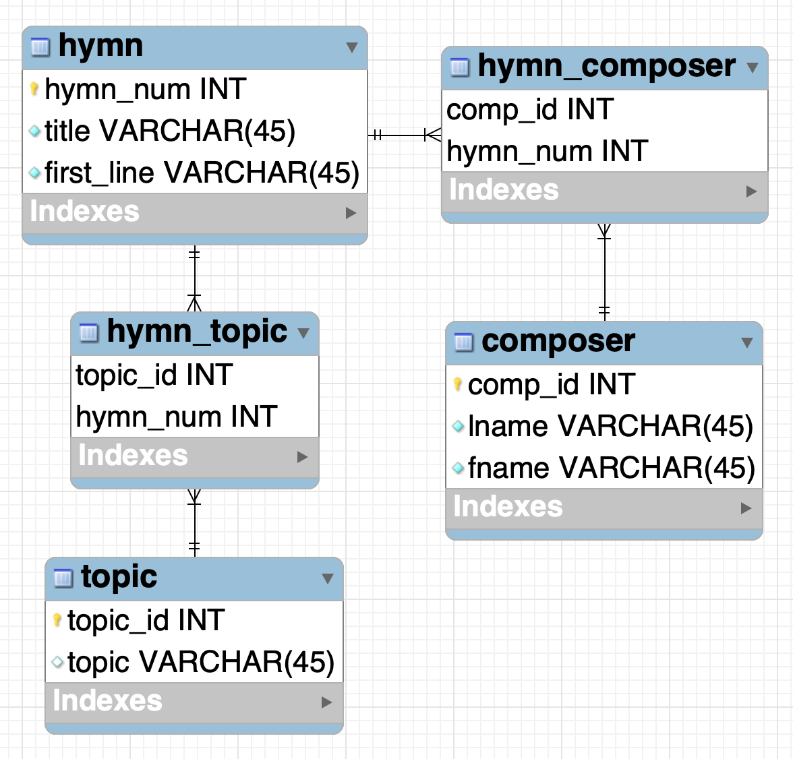
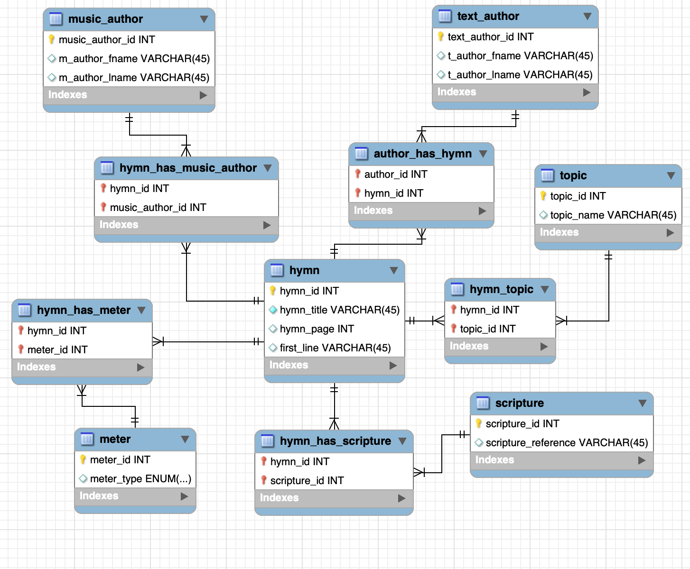

Note: The weekly Teaching Notes only identify week-specific
considerations. Please refer to the General Teaching Notes for
repeating course facilitation expectations.
Week 04 Outcomes
Learn about a relational database modeling system (CASE tool)
Understand what a relational database is and how the keys are used in relationships
Understand what an entity is and how they are related to other entities
Understand what attributes might belong to an entity and the datatypes of those attributes
Before the Week Begins
Students will go over preparation materials and complete the preparation check before the first class of the
week.
During the Week
First of the week:
The students should have completed the preparation materials and check before the beginning of the week and
be ready for learning, activities, and discussions.
Take the ERD you showed last week with their gathered data and now show them the tables with data. Explain
again the tables and relationships involved. Explain that this is what makes a relational database
relational. Talk about primary and foreign keys that were used. Show the design view of a table and also go
over Not Null, Default values and Auto-increment and what they mean. Look at the data in each table and
understand how primary keys won't repeat, but foreign keys might with a many relationship.
(W04 - Ward Design)
The following is a video that shows steps to design ward data into an ERD. Let the students lead the
design by asking them questions and let them ask you questions, the video is just for ideas. It's more
fun if they have discussion about it and are not just watching you do it.
This is a great place to cover referential integrity by explaining that you can't delete a ward when there are members that are in that ward and you can't add a member to a ward that doesn't exist.
Remind students of the quiz the second class of the week.
Mid-week
Have them complete their quiz by themselves once and then with others for the second attempt. The
discussions and debates during the second attempt as a group is a great 'teach one another' activity.
The two scores will be averaged for their final quiz score.
Show them a website that uses a database to populate the content on the web pages. Show them how
they might attempt to reverse engineer the database structure. Show the entities and attributes of the
entities. They will be doing this in their homework this week. For example you could show them:
https://www.churchofjesuschrist.org/music/index/hymns and talk about the entities and attributes that
might be needed.
Let them come up with ideas for entities, attributes, and relationships as practice for their homework.
Here's a very simplistic ERD that might be created from that site:

For SQL practice/overview with the hymns example there are DML (Insert, Select) and DDL (Create, Drop) statements available in Digging Deeper this week.
Here is a more complex look at a possible hymns solution

End of the Week
The homework due Saturday (W04 - Database Design) will be
creating an ERD of any database-driven website that they choose.
Grading/Feedback
Instructor: The check and quiz are auto-graded. The homework will be creating an ERD and
submiting an image of that ERD. Be very lenient on their design, but give good feedback on how their entities
and attributes and relationships are set up.
Looking Ahead
Remind students that they have readings and videos to watch and a check to complete before the first class
next week.